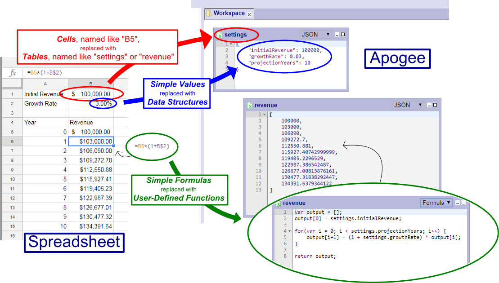

Apogee is an easy-to-use, reactive, functional programming environment.
It works best for programmatic data manipulation and data analysis. It can also be used for general software development.
The Apogee web application runs completely in the browser and is written in javascript. The user scripting language is also javascript.
Because Apogee is uses javascript, the data format for data structures is JSON. This is a convenient because JSON is one of the most prevelent data formats, such as for metadata files and data transfer in web services.
Apogee if open source and hosted at https://github.com/sutter-dave/ApogeeJS.